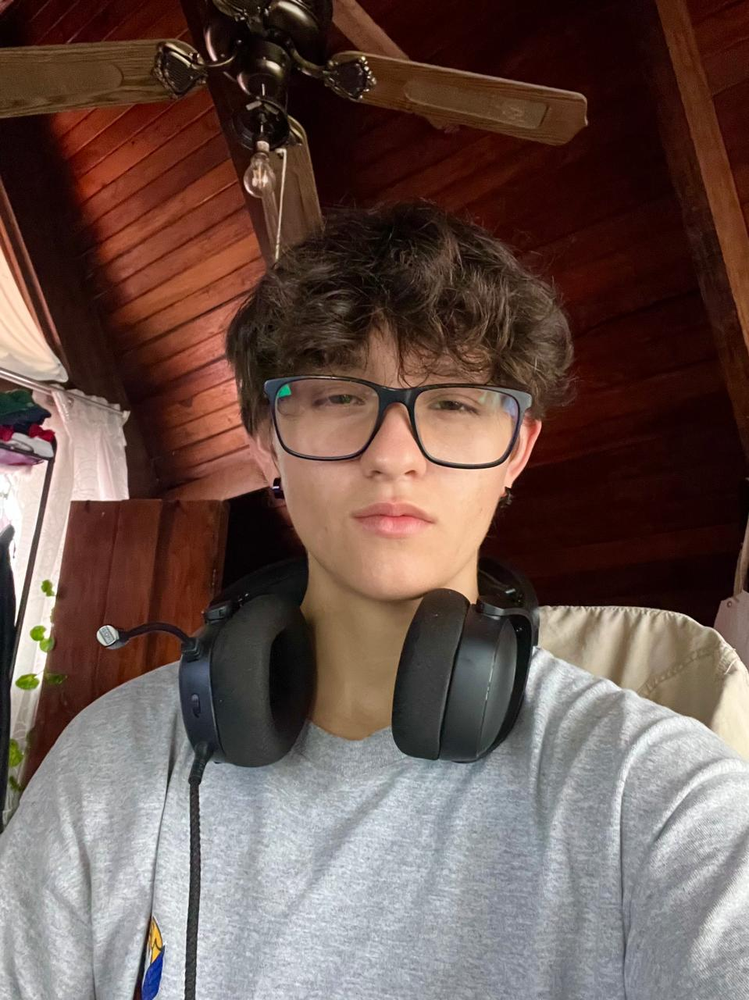

Andy Porras Notario
Custumer Service | Web Developer | Accounting Assistant

Summary
Young, dynamic, wanting a future and growing labor.
I have outstanding skills as a good presence, imagination and
initiative to develop new ideas,
ease to solve as a team, empathetic, with the ability to serve with a lot of
tolerance and patience,
enthusiastic, honest, responsible, punctual, with the gift of people and communicative.
Education
- Intensa Language Institute - English (current)
- Middle Education - Liceo de Moravia (2023)
- CPEA Flight Institute - Passenger Cabin Tripulae (2024)
Work Experience
Events staff
- Accountant Assistant - Rapicontas S.A
(Jan - Nov 2024)
-
I was assistant and animator in public entertainment events of all ages. I solved formacreational
problems and solveting the instructions of superiors. Participating in the assembly and disassembly of
the area, using laceomunication to coordinate group.
Hard Skills
- Microsoft: Excel, Word, PowerPoint
- English Level B2: Oral and writing
Soft Skills
- Autodidact
- Effective team communication
- Control in stress situations
- Eager to grow labor
- Good presence and imagination
- Initiative to develop ideas
- Ease to solve as a team
- Empatheic
- Assistant
Other